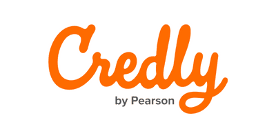
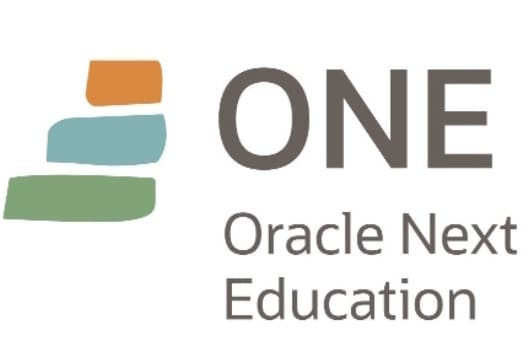
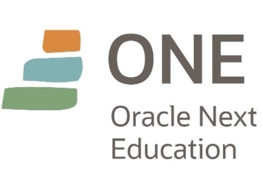
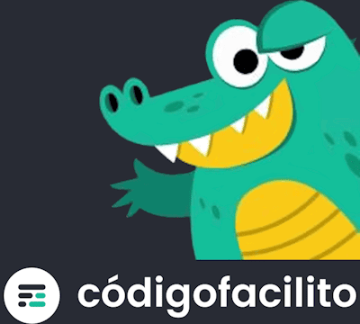
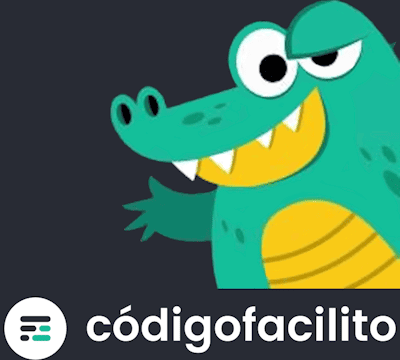

Credenciales Digitales
Trofeos y Distintivos de formaciones Microsoft learning
Abrir
Credly es una plataforma que facilita la gestión y verificación de credenciales digitales.

Abrir
ONE - Oracle Next Education
ONE - Oracle + Alura
Programa de formacion virtual impulsado por Oracle disctado por AluraLatan
Frontend, Backend, Bases de Datos, Git y GitHub, Metodologías Ágiles, Habilidades Blandas, Python. 
Abrir
Frontend, Backend, Bases de Datos, Git y GitHub, Metodologías Ágiles, Habilidades Blandas, Python. 
Abrir
Codo a Codo
CAC - Codo a Codo
Propuesta que llevan a cabo de manera conjunta el Ministerio de Educación y el Ministerio de Modernización de la Ciudad de Buenos Aires.
Frontend, Backend, Bases de Datos, Git y GitHub, Metodologías Ágiles, Habilidades Blandas, Python.
Frontend, Backend, Bases de Datos, Git y GitHub, Metodologías Ágiles, Habilidades Blandas, Python.
CodigoFacilito
Plataforma CodigoFacilito
Plataforma educativa ofrece Cursos y Bootcamps de formacion, con modalidad gratuita y de pago.
Enfocandos en la enseñanza práctica IT. 
Abrir Perfil
Enfocandos en la enseñanza práctica IT. 
Abrir Perfil
REDFEL
REDFEL - Red de Formación Educativa y Laboral
Tecnico en reparacion y actualizacion de PC
Tecnico en reparacion y actualizacion de PC
Argentina Programa
#SeProgramar - #YoProgramo
Full Stack Junior: CSS3, HTML5, Javascript, Angular, Java, Spring Boot
Argentina Programa 4.0 inicitativa gratuita de formacion Secretaría de Economía del Conocimiento del Ministerio de Economía de la Nación Instituto Nacional de Tecnología Industrial
Full Stack Junior: CSS3, HTML5, Javascript, Angular, Java, Spring Boot
Argentina Programa 4.0 inicitativa gratuita de formacion Secretaría de Economía del Conocimiento del Ministerio de Economía de la Nación Instituto Nacional de Tecnología Industrial
Ademass
Ademass es una comunidad de Desarrolladores abierta.
Brinda formación de calidad para todos los niveles y especializaciones.
Todocode Academy
Todocode Academy
Academia Web y canal de YouTube que ofrece cursos y tutoriales para aprender informática y programación
Academia Web y canal de YouTube que ofrece cursos y tutoriales para aprender informática y programación
Potenciar Argentina
Introduccion a la programacion y el pensamiento computacional
Fundacion Potenciar Argentina
Parte de la iniciativa Argentina Programa 4.0
Fundacion Potenciar Argentina
Parte de la iniciativa Argentina Programa 4.0